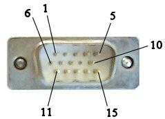
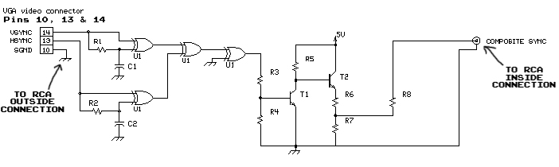
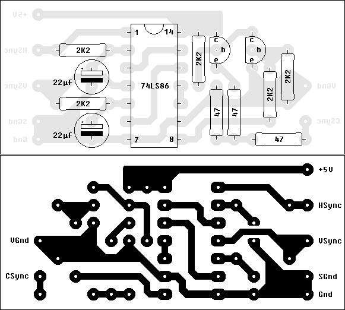
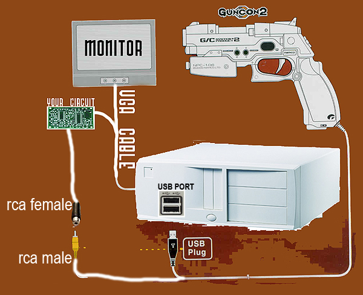
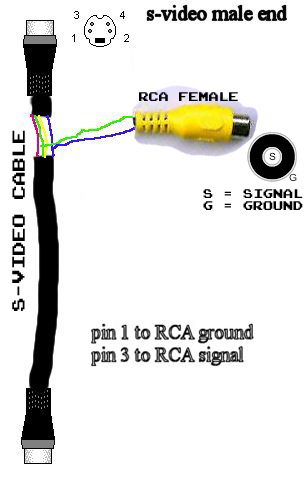
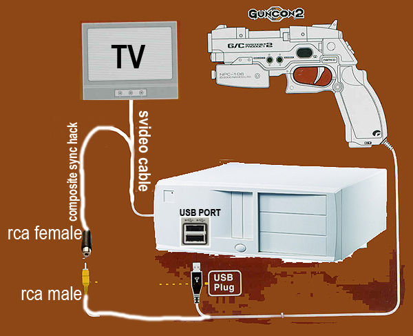
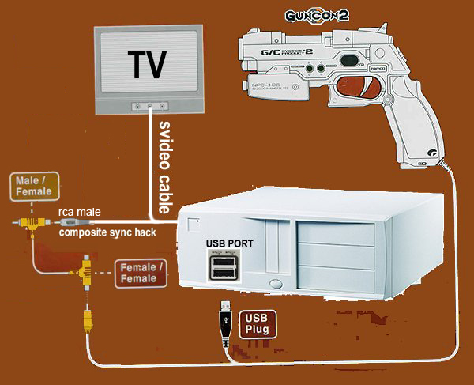
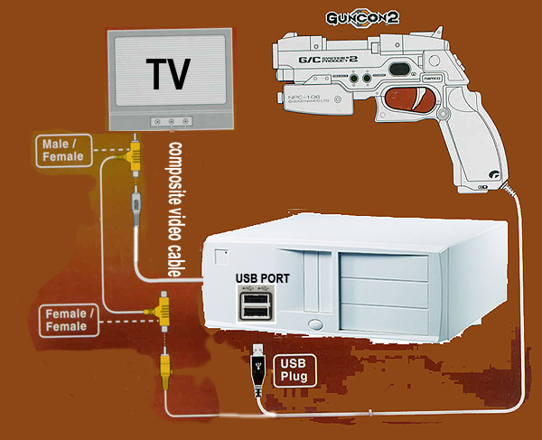
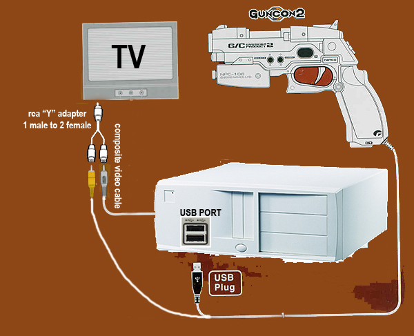
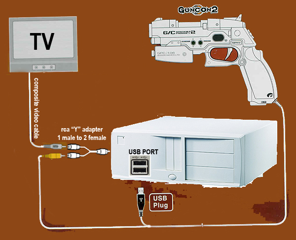

HOW DO I CONNECT A GUNCON2 TO MY PC?
(This page is a mirror that I managed to retrieve from the Wayback Machine from March of 2006. The original page was hosted at:
http://intruderalert.myarcade.org/GUNCON2.htm
The contents of this page are largely unchanged, aside from some HTML cleanup coming out of the Wayback Machine and some rather fugly Microsoft Frontpage-isms. Hopefully people find this mirror useful.
--Numbski
THANKS TO SMOG FOR DIGGING UP THIS AMAZING CIRCUIT
PROVIDING THE GUNCON2 WITH THE PROPER COMPOSITE SYNC
WHILE RETAINING THE VISUAL QUALITY OF THE ARCADE MONITOR

YOU WILL NEED TO BUILD THIS CIRCUIT

| Parts List: |
| R1 = 2,2 Kohm
resistor R2 = 2,2 Kohm resistor R3 = 2,2 Kohm resistor R4 = 2,2 Kohm resistor R5 = 2,2 Kohm resistor R6 = 47 Ohm resistor R7 = 47 Ohm resistor R8 = 47 Ohm resistor C1 = 22 uF / 16 v electrolitic capacitor C2 = 22 uF / 16 v electrolitic capacitor U1 = 74LS86 T1 = BC547 ( Or any other NPN cheap transistor) T2 = BC547 ( Or any other NPN cheap transistor) |


SURE THERE ARE WAYS TO CONVERT SVIDEO TO COMPOSITE
BUT THAT WILL RESULT IN A SOFTER PICTURE WITH LESS DETAIL
THANKS TO BRANDON WE HAVE THE FOLLOWING METHOD
PROVIDING THE COMPOSITE SYNC WE NEED FOR THE GUNCON2 WITHOUT LOSING OUR SVIDEO QUALITY


OR
IF YOU DON'T HAVE AN RCA FEMALE HANDY
BUT DO HAVE AN RCA MALE
AND THE ORIGINAL GUNCON2 2-PLAYER EXTENSION CABLE YOU CAN TRY THIS

COMPOSITE VIDEO GIVES YOU THE LEAST VISUAL QUALITY
BUT IT'S SUPER EASY TO SET UP THE GUNCON2
ANY OF THE FOLLOWING WILL WORK JUST FINE

OR

OR

THANKS TO ALL !!
SPECIAL THANKS TO SMOG FOR LEADING THE PROJECT WITH HIS AMAZING DRIVER
http://xoomer.virgilio.it/smogdragon/